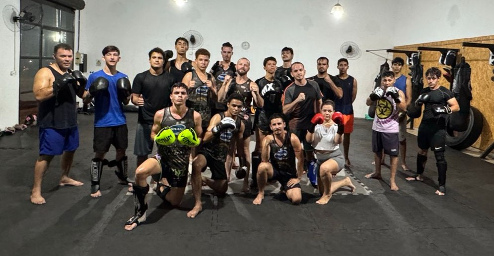

Conheça nosso espaço de treino


Na Invictus, acreditamos que a luta vai além do físico. Trabalhamos valores como disciplina, respeito, confiança e superação pessoal. Nosso foco não está apenas em títulos ou medalhas, mas no crescimento individual e no impacto positivo que as artes marciais geram na vida de cada praticante. Seja para melhorar seu condicionamento, aprender defesa pessoal ou se preparar para competir, a Invictus é o seu lugar. Junte-se a nós e descubra a força que existe dentro de você.
Há anos moldando campeões dentro e fora do tatame, a Invictus Team é referência no universo das lutas. Localizada em Taquaritinga, oferecemos treinos de qualidade com uma equipe comprometida, infraestrutura completa, ambiente seguro e acolhedor.
Aqui, você encontra aulas de Muay Thai, Boxe Chinês, Jiu–Jitsu e Defesa Pessoal, com instrutores experientes que respeitam o ritmo, os objetivos e o estilo de cada aluno.
